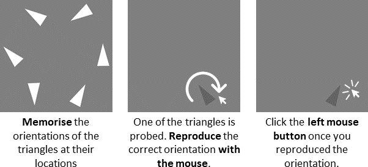

Note: Well done in the practie! You will proceed to the experiment task now without feedbacks. Overall, this task takes about 30 minutes with short breaks every 5 minutes.
Remember:

Ready for the experiment?
Please contact the experimenter (email: sjiang17@sheffield.ac.uk) if you have any questions.
As soon as you press the forward arrow key, a countdown starts
counting down from 3. The test starts immediately afterwards.
Have fun!